NEWAI strategy · Downloadable tool · EN / FRStratégie IA · Outil téléchargeable · FR / EN
Which AI use cases first? A scoring toolkit for B2B sales teamsPar quels cas IA commencer ? Une grille de priorisation pour les équipes de ventes B2B
Sales leaders are flooded with AI tools but have no way to decide what to deploy first, for which role, and with which controls. I built a catalog of 34 AI use cases for field reps and sales leadership, rated on five weighted criteria (impact, feasibility, data readiness, adoption, risk control) with an automatic ranking.Les directions des ventes sont submergées d’outils IA sans méthode pour décider quoi déployer d’abord, pour quel rôle et avec quels contrôles. J’ai bâti un catalogue de 34 cas d’usage IA (représentants terrain et direction), notés sur cinq critères pondérés (impact, faisabilité, données, adoption, maîtrise du risque), avec un classement automatique.
- Built
- Livré
- Excel toolkit: priority dashboard with charts and a value-vs-effort matrix, editable weights, rep-vs-manager time savings, 18-month roadmap with pass criteria, KPI framework and human-in-the-loop governance.
- Boîte à outils Excel : tableau de bord avec graphiques et matrice valeur-effort, pondérations modifiables, temps libéré représentant vs directeur, feuille de route de 18 mois avec critères de passage, cadre de KPI et gouvernance avec contrôle humain.
34 use cases34 cas d’usage5 weighted criteria5 critères pondérés18-month roadmapFeuille de route 18 mois
ExcelScoring modelAI strategyGovernance
⬇ Download the toolkit (English)
⬇ Télécharger l’outil (français)
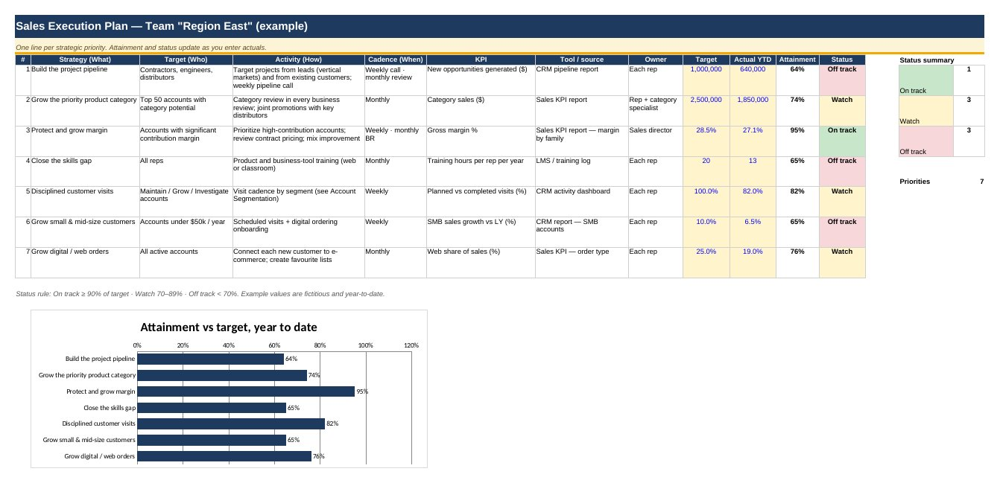
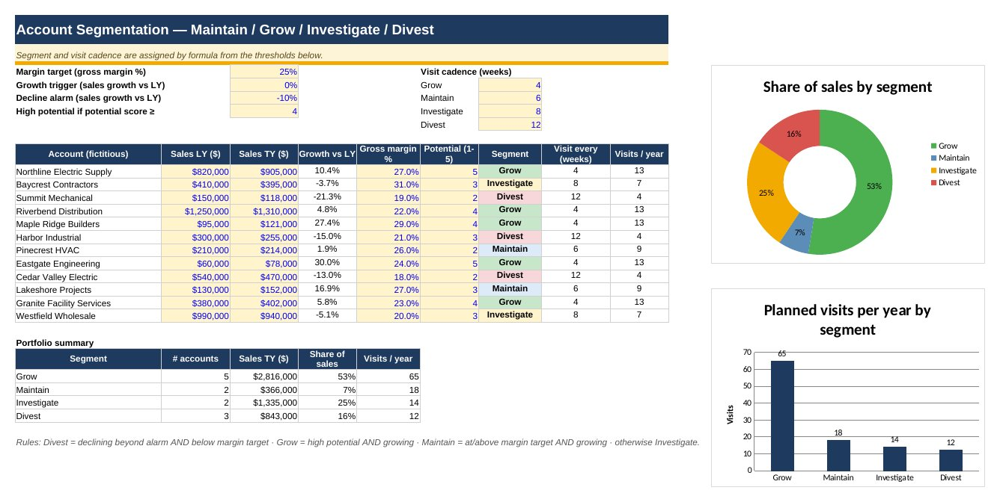
NEWSales execution · Downloadable tool · EN / FRExécution des ventes · Outil téléchargeable · FR / EN
From sales strategy to weekly execution — and protected marginDe la stratégie commerciale à l’exécution hebdomadaire — en protégeant la marge
Sales plans live in a deck; reps don’t know what to do this week, and discounts are granted without checking whether they pay back. This playbook turns strategy into a one-page execution plan and a margin discipline — generalized from the framework I used leading B2B distribution sales teams.Le plan de ventes reste dans une présentation ; les représentants ne savent pas quoi faire cette semaine et les rabais sont accordés sans vérifier qu’ils rapportent. Ce playbook transforme la stratégie en plan d’exécution d’une page et en discipline de marge — généralisé à partir du cadre que j’utilisais à la tête d’équipes de ventes en distribution B2B.
- Built
- Livré
- Execution plan (what / who / how / when / KPI) with live status and chart; account segmentation by formula with visit cadence; return-on-customer-investment calculator; three-lever profit framework; call-planning checklist.
- Plan d’exécution (quoi / qui / comment / quand / KPI) avec statut et graphique en temps réel ; segmentation des comptes par formule avec cadence de visites ; calculateur de rendement des investissements clients ; cadre de profit en trois leviers ; liste de préparation de visite.
5 tools in 15 outils en 14 account segments4 segments de comptesROI per rebateRendement par rabais
ExcelSales opsSegmentationMargin
⬇ Download the playbook (English)
⬇ Télécharger le guide (français)
NEWForecasting · Downloadable tool · EN / FRPrévision · Outil téléchargeable · FR / EN
A seasonal forecast finance can audit — no black boxUne prévision saisonnière que la finance peut auditer — sans boîte noire
Budgets for seasonal product families are often “last year + X%”, ignoring seasonality and trend — and nobody can explain the number. This model decomposes the history step by step in plain Excel formulas, so a sales director can defend every figure in front of finance.Les budgets des familles de produits saisonnières se font souvent à « l’an dernier + X % », sans saisonnalité ni tendance — et personne ne peut expliquer le chiffre. Ce modèle décompose l’historique étape par étape en formules Excel transparentes, pour qu’un directeur des ventes puisse défendre chaque chiffre devant la finance.
- Built
- Livré
- Centered moving averages, seasonal indices, trend regression, forecast = trend × seasonality, accuracy by MAPE, market-driver scenario lever, forecast bands and a summary dashboard. Complements the driver-based budget model in this portfolio.
- Moyennes mobiles centrées, indices saisonniers, régression de tendance, prévision = tendance × saisonnalité, précision par MAPE, levier de scénario de marché, bandes de prévision et tableau de bord. Complète le modèle budgétaire par facteurs de ce portfolio.
24-quarter historyHistorique de 24 trimestres97% in-sample accuracy (synthetic data)97 % de précision (données synthétiques)
ExcelTime seriesRegressionBudget
⬇ Download the model (English)
⬇ Télécharger le modèle (français)
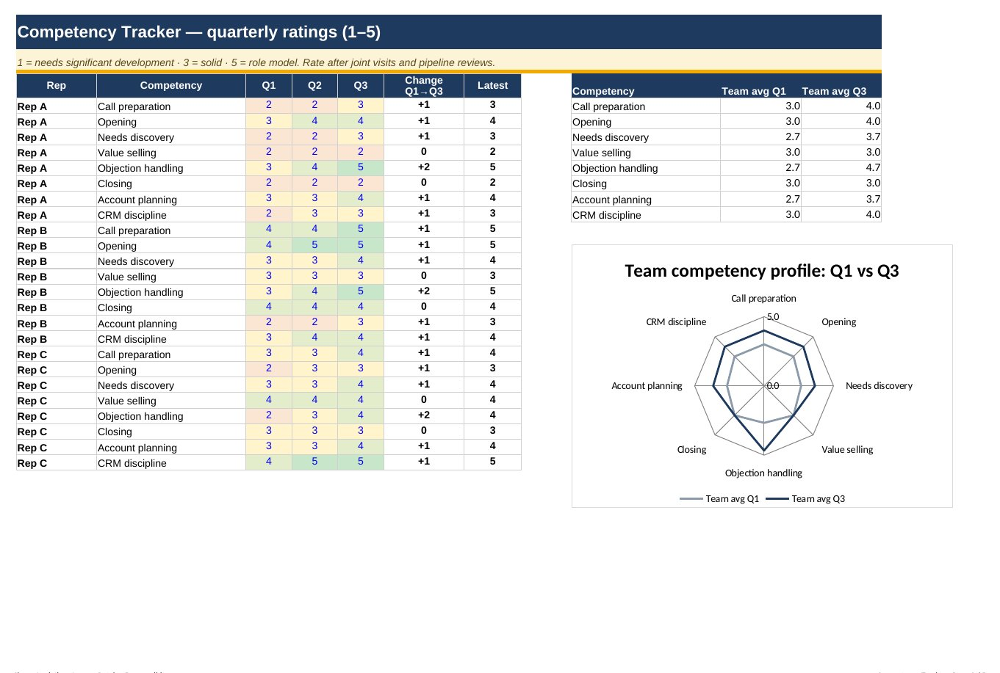
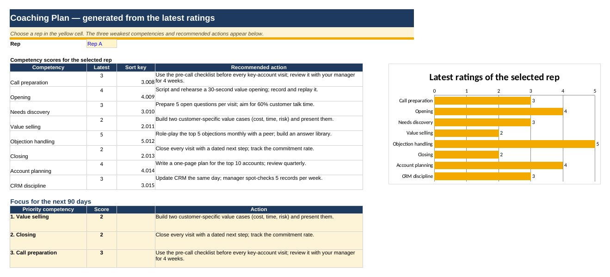
NEWSales coaching · Downloadable tool · EN / FRCoaching des ventes · Outil téléchargeable · FR / EN
Coaching reps on facts, not impressionsCoacher les représentants sur des faits, pas des impressions
Rep coaching is often a quick chat after a visit, with nothing written down and no follow-up. This toolkit turns each joint visit into a scored observation, tracks eight selling competencies quarter by quarter, and generates each rep’s three coaching priorities — then builds a leader’s development plan with the 70-20-10 rule.Le coaching des représentants se résume souvent à une discussion après une visite, sans trace ni suivi. Cette trousse transforme chaque visite conjointe en observation notée, suit huit compétences de vente trimestre après trimestre et génère les trois priorités de coaching de chaque représentant — puis bâtit le plan de développement d’un gestionnaire selon la règle 70-20-10.
- Built
- Livré
- Call scorecard by phase with chart; competency tracker with team radar; automatic coaching plan (three weakest competencies + actions); IDP with Stop / Start / Continue matrix and 70-20-10 mix check. Rebuilt from the tools I used as a sales director.
- Grille d’observation par phase avec graphique; suivi des compétences avec radar d’équipe; plan de coaching automatique (trois compétences les plus faibles + actions); PDI avec matrice Cesser / Commencer / Continuer et contrôle de la répartition 70-20-10. Reconstruit à partir des outils que j’utilisais comme directeur des ventes.
8 competencies8 compétencesAuto coaching planPlan de coaching auto70-20-10
ExcelCoachingSales enablementLeadership
⬇ Download the toolkit (English)
⬇ Télécharger l’outil (français)
NEWSales KPIs · Downloadable tool · EN / FRKPI de ventes · Outil téléchargeable · FR / EN
One monthly page for the sales leadership teamUne page mensuelle pour la direction des ventes
Monthly sales meetings drown in exports. This cockpit answers four questions on one page: are we growing vs last year, where, are we protecting margin, and is the cost of selling under control — plus whether lost customers are coming back.Les réunions de ventes mensuelles se noient dans les exports. Ce tableau de bord répond à quatre questions sur une page : croissons-nous par rapport à l’an dernier, où, protégeons-nous la marge, et le coût de vente est-il maîtrisé — en plus de suivre le retour des clients perdus.
- Built
- Livré
- KPI tiles with status vs targets, channel table with automatic alerts, three charts (monthly sales TY vs LY, YTD by channel, margin vs target), win-back tracker with recovery status. Change one cell to move the period. Rebuilt from the monthly KPI file I ran as national sales director.
- Tuiles d’indicateurs avec statut vs cibles, tableau par canal avec alertes automatiques, trois graphiques (ventes mensuelles AC vs AP, cumul par canal, marge vs cible), suivi de reconquête avec statut de récupération. Une seule cellule change la période. Reconstruit à partir du fichier de KPI mensuel que je pilotais comme directeur national des ventes.
6 KPI tiles6 tuiles d’indicateursChannel alertsAlertes par canalWin-back trackerSuivi de reconquête
ExcelKPIDashboardSales ops
⬇ Download the cockpit (English)
⬇ Télécharger le tableau de bord (français)
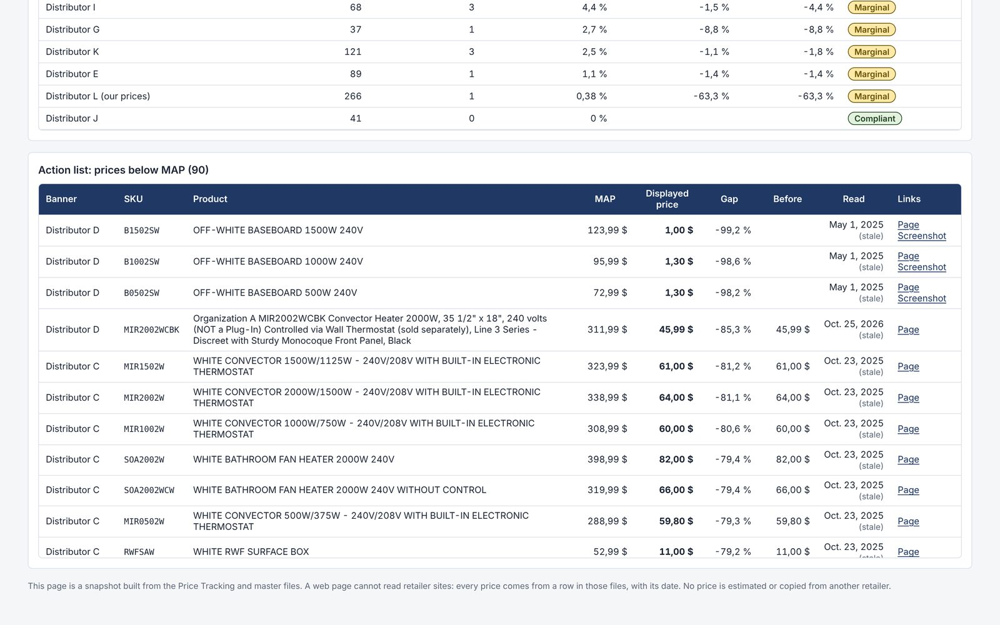
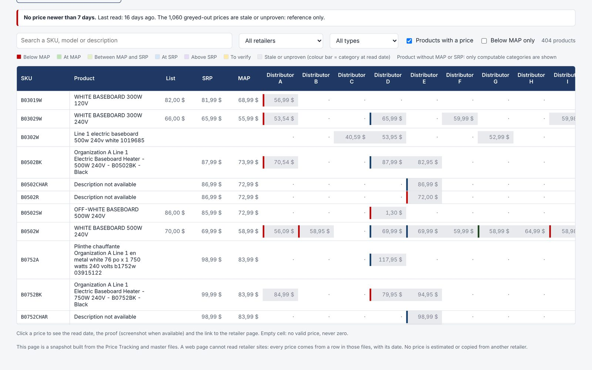
AI tool · PricingOutil IA · Prix
Retail price-monitoring app with proof for every priceApp de veille des prix en ligne, avec preuve pour chaque prix
Manually checking retailer prices against minimum advertised price (MAP) was slow and disputed. I built a web app that reads prices on retailer sites, keeps the URL, timestamp and page extract as evidence, and flags violations.Vérifier à la main les prix des détaillants face au prix minimum annoncé (MAP) était lent et contesté. J’ai bâti une app web qui lit les prix sur les sites des détaillants, conserve l’URL, l’heure et un extrait de page comme preuve, et signale les écarts.
- Built
- Livré
- Field view + executive view (6 KPIs, retailer ranking, below-MAP action list), double-read rules for outliers, polite crawling, Excel export, automated tests; deployable on ~15 workstations or in the cloud (Docker).
- Vue terrain + vue direction (6 indicateurs, classement des bannières, liste d’action sous le MAP), double lecture des valeurs aberrantes, collecte respectueuse des sites, export Excel, tests automatisés ; déployable sur ~15 postes ou en nuage (Docker).
1,060 prices tracked1 060 prix suivis12 retailers12 détaillants90 below-MAP alerts90 alertes sous le MAP
PythonFlaskDockerWeb scrapingMAP
▶ Try the live demoEssayer la démo en direct
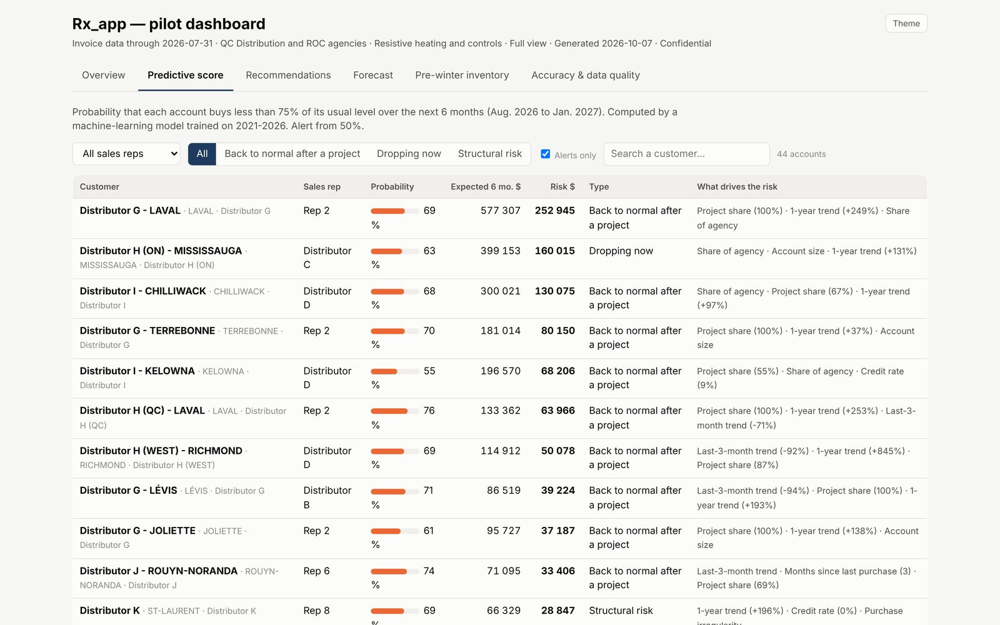
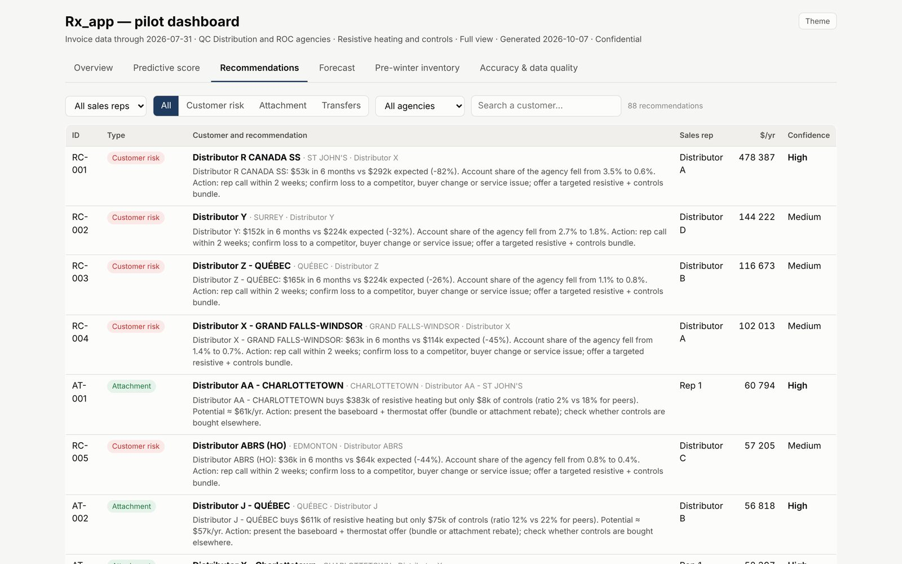
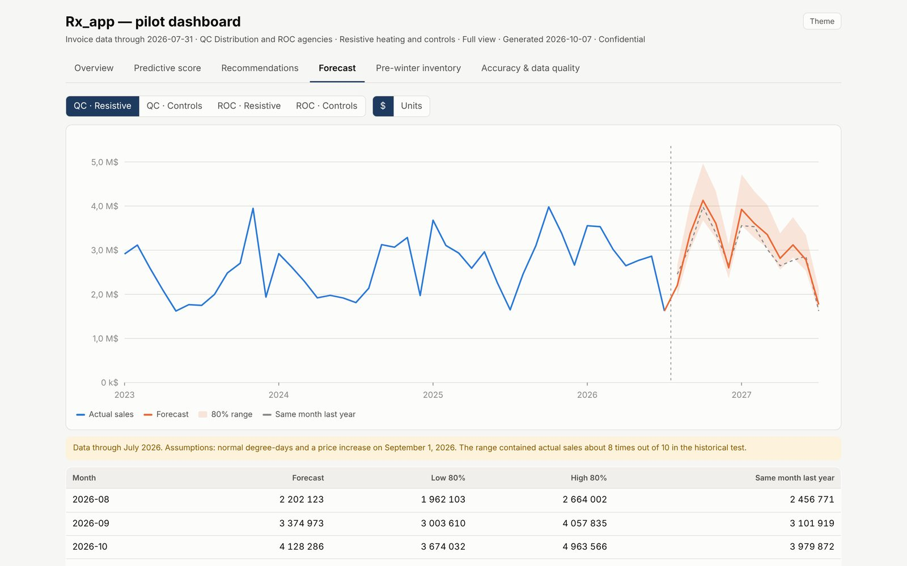
Analytics · PrescriptiveAnalytique · Prescriptive
Prescriptive analytics engine: from sales history to next best actionMoteur d’analytique prescriptive : de l’historique de ventes à la prochaine action
Reports described the past; nobody told reps, buyers or category managers what to do next. I designed a single engine combining descriptive, predictive and prescriptive layers with market signals (degree-days, housing starts, incentives, competitor prices).Les rapports décrivaient le passé ; personne ne disait aux représentants, acheteurs ou gestionnaires de catégorie quoi faire ensuite. J’ai conçu un moteur unique qui combine descriptif, prédictif et prescriptif avec des signaux de marché (degrés-jours, mises en chantier, subventions, prix concurrents).
- Built
- Livré
- Python engine (v0.1 → v0.2), retrospective back-test, churn-risk module, role-based recommendations, pilot dashboards for 3 user profiles and a closed-loop decision log (accepted / refused / measured).
- Moteur Python (v0.1 → v0.2), test rétrospectif, module de risque d’attrition, recommandations par rôle, tableaux de bord pilotes pour 3 profils et journal de décisions en boucle fermée (acceptée / refusée / mesurée).
44 predictive alerts44 alertes prédictives88 recommendations88 recommandations12.5% forecast error12,5 % d’erreur de prévision
PythonForecastingChurnDecision log
BI · Data governanceBI · Gouvernance des données
Power BI turnaround plan for a group growing by acquisitionsPlan de redressement Power BI pour un groupe en croissance par acquisitions
Each acquired site reported its own numbers; committees spent time reconciling instead of deciding. I audited the reporting landscape and proposed one central data model with a single definition per KPI, deployed in waves alongside existing reports.Chaque site acquis produisait ses propres chiffres ; les comités réconciliaient au lieu de décider. J’ai audité l’environnement de rapports et proposé un modèle central avec une définition unique par KPI, déployé par vagues en parallèle des rapports actuels.
- Built
- Livré
- Architecture diagnostic, A3 project charter, customer master-data cleansing (impact report vs ERP), unassigned-active-accounts analysis, 20-slide executive deck.
- Diagnostic d’architecture, charte A3, nettoyage des données maîtres clients (rapport d’impact vs ERP), analyse des clients actifs non assignés, présentation de 20 diapos à la direction.
1 KPI dictionary1 dictionnaire de KPIA3 charterCharte A3Exec planPlan à la direction
Power BIMaster dataKPI dictionaryA3
Commercial strategy · M&AStratégie commerciale · Fusion
Harmonizing two brands’ distributor rebate programs after a mergerHarmoniser les programmes de rabais distributeurs de deux marques après une fusion
Two merged brands ran different rebate programs with the same national buying group. I modeled a single combined grid, weighted by actual purchase volume so neither side is favoured, and reproducing past rebates to the dollar at the merge date.Deux marques fusionnées offraient des programmes de rabais différents au même regroupement d’achat national. J’ai modélisé une grille unique, pondérée par le volume réel d’achats pour n’avantager aucune partie, et reproduisant au dollar près les rabais au moment de la fusion.
- Built
- Livré
- Parametric Excel model and simulator, two viable options (immediate vs progressive), before/after terms, draft agreement, executive summary and VP deck.
- Modèle Excel paramétrable et simulateur, deux options viables (immédiate vs progressive), conditions avant/après, ébauche d’entente, sommaire exécutif et présentation VP.
1 combined grid1 grille combinée2 viable options2 options viablesReproduces past rebates to the $Reproduit les rabais au $ près
Excel modelingRebatesNegotiationPost-merger
Pricing · LeanPrix · Lean
Unified pricing architecture and price-increase impact analysisArchitecture de prix unifiée et analyse d’impact des hausses de prix
Overlapping price lists, project discounts and contractor rebates across two brands created leakage. I mapped the full pricing chain, aligned project-discount charts and quantified the real gain of a price increase on actual volumes.Des listes de prix, escomptes de projets et rabais installateurs qui se chevauchaient entre deux marques créaient de la fuite de marge. J’ai cartographié toute la chaîne de prix, aligné les grilles d’escompte de projets et chiffré le gain réel d’une hausse sur les volumes réels.
- Built
- Livré
- Swim-lane process map (Lean Six Sigma), price-variation analysis tool by product family (Excel/VBA), common project-discount chart, test-market pricing strategy.
- Cartographie en couloirs (Lean Six Sigma), outil d’analyse des variations de prix par famille (Excel/VBA), grille d’escompte de projets commune, stratégie de prix en marché test.
End-to-end pricing mapChaîne de prix cartographiéeExcel/VBA toolOutil Excel/VBATest-market strategyStratégie marché test
PricingSwim lanesVBAMargin
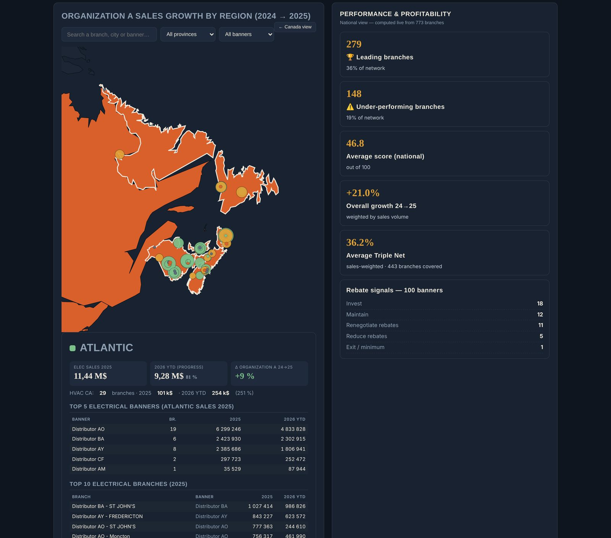
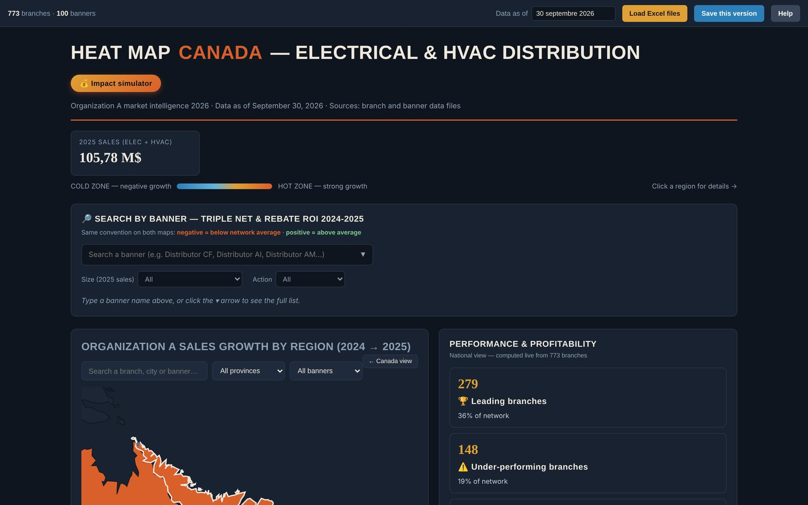
Market intelligence · GeoIntelligence de marché · Géo
Canada-wide distributor branch heat map and coverage databaseCarte de chaleur et base de couverture des succursales de distribution au Canada
Three separate BI extracts gave three different answers on market coverage. With an account manager, we reconciled them into one master file and an interactive heat map showing coverage and white space by branch and province.Trois extraits BI donnaient trois réponses différentes sur la couverture du marché. Avec un chargé de compte, nous les avons réconciliés dans un fichier maître et une carte de chaleur interactive montrant la couverture et les zones à développer par succursale et province.
- Outcome
- Résultat
- For the first time, sales could state accessible-market coverage and prioritize branches with data.
- Pour la première fois, les ventes pouvaient chiffrer leur couverture du marché accessible et prioriser les succursales avec des données.
773 branches773 succursales100 banners100 bannièresRebate ROI by bannerROI des rabais par bannière
Data reconciliationHeat mapJavaScript
Sales enablementHabilitation des ventes
Competitive cross-reference tool and technical sales trainingOutil d’équivalences concurrentielles et formation de vente technique
Agents struggled to quote a technical product line (heat-tracing cable) against competitors. I built a bilingual interactive equivalence tool, pocket field cards and a 22-slide training built around customer outcomes, not part numbers.Les agents peinaient à soumissionner une gamme technique (câble chauffant) face à la concurrence. J’ai bâti un outil d’équivalences interactif bilingue, des aide-mémoire terrain et une formation de 22 diapos axée sur les résultats client, pas sur les numéros de pièce.
Guided · direct · advanced searchRecherche guidée · directe · avancéeBilingualBilingue
HTML toolBilingualTrainingCompetitive intel
▶ Try the live demoEssayer la démo en direct
AI governanceGouvernance IA
Generative-AI governance policy for an industrial groupPolitique de gouvernance de l’IA générative pour un groupe industriel
Two competing AI policy drafts existed. I ran a comparative analysis, built a non-redundancy filter and a target document architecture, and structured proposals by audience (executives, managers, reps) for an executive decision.Deux ébauches de politique IA coexistaient. J’ai mené une analyse comparative, bâti un filtre de non-redondance et une architecture documentaire cible, et structuré les propositions par palier (direction, gestionnaires, représentants) pour décision du comité de direction.
2 drafts reconciled2 ébauches réconciliéesTiered by audiencePar palier d’audience
AI policyRiskChange management
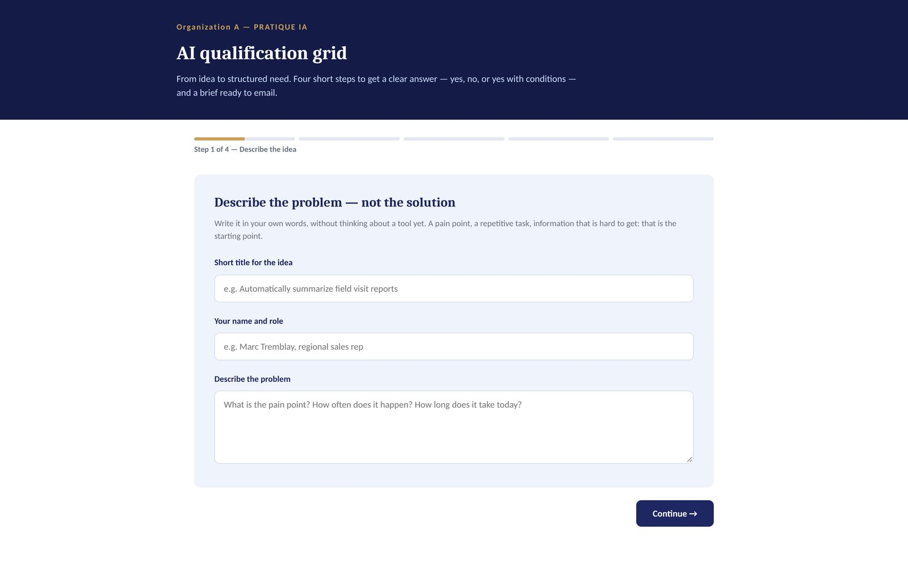
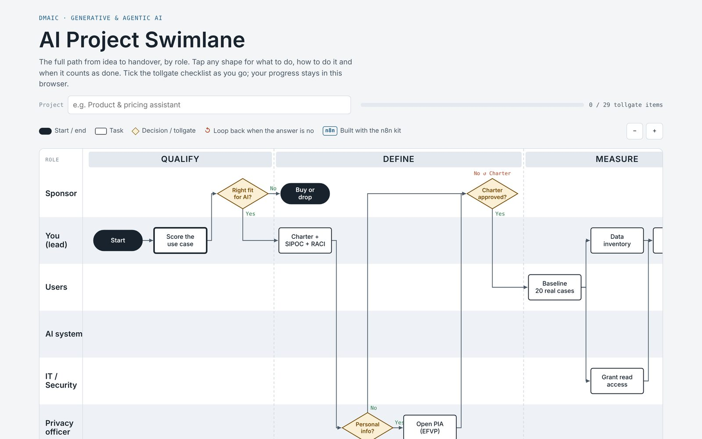
AI strategyStratégie IA
Building an internal AI practice: from policy to measurable valueBâtir une pratique IA interne : de la politique à la valeur mesurable
“Governance gives the right to use AI; the practice gives the means to get value from it.” A 4-pillar framework, roadmap and operating model, plus an interactive grid to qualify and prioritize AI use cases.« La gouvernance donne le droit d’utiliser l’IA ; la pratique donne les moyens d’en tirer de la valeur. » Un cadre à 4 piliers, une feuille de route et un modèle opérationnel, plus une grille interactive pour qualifier et prioriser les cas d’usage IA.
4 pillars4 piliersUse-case scoring gridGrille de qualificationDMAIC tollgatesJalons DMAIC
AI roadmapUse-case scoringOperating model
AI trainingFormation IA
AI Sales Playbook: 127 slides, trainer manual and three learning pathsSales Playbook IA : 127 diapos, guide du formateur et trois parcours
A reference program taking sales teams from AI basics to agents and workflow automation — with separate paths for reps (≈4 h, usable the next morning), AI champions and leadership/IT, Copilot guides, a prompt library and a 30-day follow-up plan.Un programme de référence qui mène les équipes de vente des bases de l’IA jusqu’aux agents et à l’automatisation — avec des parcours distincts pour représentants (≈4 h, applicable dès le lendemain), champions IA et direction/TI, guides Copilot, bibliothèque de prompts et plan de suivi de 30 jours.
127 slides127 diapos3 learning paths3 parcours30-day follow-upSuivi de 30 jours
CopilotPromptingAgentic AIAdult learning
Business caseDossier d’affaires
AI Sales & CX: a 90-day pilot business case for the CEOIA Ventes et CX : dossier d’affaires d’un pilote de 90 jours pour le PDG
Not just automating quotes: creating the group’s first commercial data layer — capture, accelerate (FR/EN/ES answers), convert, learn — without forcing a heavy CRM on reps.Pas seulement automatiser les soumissions : créer la première couche de données commerciales du groupe — capter, accélérer (réponses FR/EN/ES), convertir, apprendre — sans imposer un CRM lourd aux représentants.
90-day pilotPilote de 90 joursFR / EN / ESData layer, not a heavy CRMCouche de données, pas un CRM lourd
CXCRMPilot designROI
Sales enablement · VerticalsHabilitation · Marchés verticaux
Site-analysis tool by vertical marketOutil d’analyse de site par marché vertical
Reps pick a building type (warehouse, airport, multi-unit, industrial…), point at what they see on site, and get the priority products, the sales angle, who to talk to and the right timing — printable as a one-page brief.Le représentant choisit un type de bâtiment (entrepôt, aéroport, multilogement, industriel…), pointe ce qu’il voit sur place et obtient les produits prioritaires, l’angle de vente, à qui parler et le bon moment — imprimable en fiche d’une page.
6 building types6 types de bâtimentsPrintable 1-page briefFiche imprimable d’une page
Interactive HTMLVertical marketsField sales
Automation · AgentsAutomatisation · Agents
AI agents and automated workflows (n8n)Agents IA et flux automatisés (n8n)
A weekly competitive-intelligence agent tracking distributor pricing, and a weekly French-language AI news digest — plus an agent-ecosystem map showing where agents fit across sales, pricing and operations.Un agent hebdomadaire de veille concurrentielle sur les prix des distributeurs et un condensé hebdomadaire des nouvelles IA en français — plus une carte de l’écosystème d’agents montrant leur place dans les ventes, les prix et les opérations.
Weekly agentsAgents hebdomadairesn8n + LLM
n8nLLM agentsScheduling
ForecastingPrévision
Driver-based budget forecast for heating and heat-pump salesPrévision budgétaire par facteurs pour le chauffage et les thermopompes
An Excel model linking sales to explicit drivers (weather, construction, incentives, pricing) so budget conversations move from opinions to assumptions that can be tested.Un modèle Excel qui relie les ventes à des facteurs explicites (météo, construction, subventions, prix) pour que les discussions budgétaires passent des opinions à des hypothèses vérifiables.
Explicit driversFacteurs explicitesTestable assumptionsHypothèses vérifiables
ExcelDriver modelBudget
▶ Try the live demoEssayer la démo en direct
Category managementGestion de catégories
Category management playbook, from beginner to strategic levelPlaybook de gestion de catégories, du débutant au niveau stratégique
A 27-slide playbook with four maturity levels: foundations, vocabulary and frameworks, technical analyses and governance — applicable in both B2B and B2C.Un playbook de 27 diapos sur quatre paliers de maturité : fondements, vocabulaire et cadres, analyses techniques et gouvernance — applicable en B2B comme en B2C.
27 slides27 diapos4 maturity levels4 paliers de maturité
Category mgmtAssortmentB2B / B2C